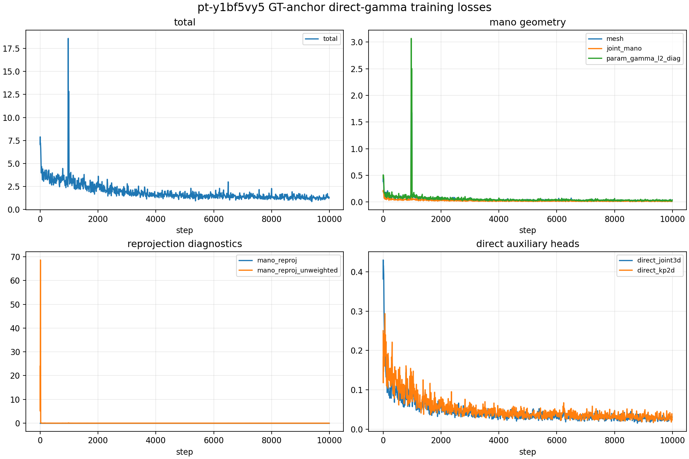
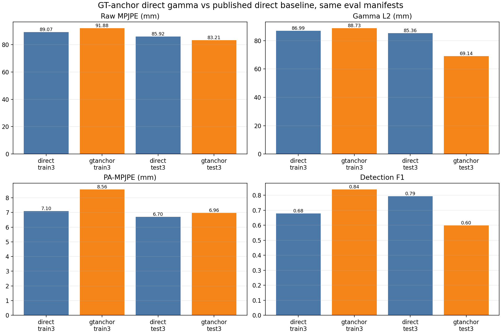

Publish the DT10 GT-anchor direct-gamma full-DexYCB eval for pt-y1bf5vy5, including loss curves and same-manifest direct baseline comparison.
| Task | Status | Commit | What landed |
|---|---|---|---|
| eval | PASS | bb7f219 | Ran train3/test3 eval for pt-y1bf5vy5 on the same manifests as the published direct baseline. |
| metrics | PASS | bb7f219 | Backfilled global hand metrics and generated same-manifest direct-vs-GT-anchor plots. |
| loss-curves | PASS | a8823d5 | Parsed train history and generated GT-anchor direct-gamma loss curves. |
GT-anchor direct gamma is close to the direct baseline: train raw/gamma L2 is 91.88/88.73 mm versus direct 89.07/86.99 mm; test raw/gamma L2 is 83.21/69.14 mm versus direct 85.92/85.36 mm.
The job did not export MANO_REPROJ_WEIGHT, and the full-DexYCB launcher defaults it to 0.0. The unweighted diagnostic is nonzero, so the computation exists but did not contribute to this training loss.
The GT anchor is cached hand_joints_2d_orig[..., root] mapped through K_orig/image_size_orig into the crop-resized THFM patch grid; it is not derived from MANO gamma.
| Aspect | Current state |
|---|---|
| Eval artifacts | diagnostics/dt10_gt_anchor_direct_gamma_eval_20260511_pt-y1bf5vy5_bb7f219/ |
| Publish assets | diagnostics/dt10_gt_anchor_direct_gamma_eval_20260511_pt-y1bf5vy5_publish_assets/ |
| Training output | logs/v2ablate/dt10_gt_anchor_direct_gamma_full_dexycb_a8823d5_camera0_8gpu/seed0/ |
| Task | Priority | What's needed |
|---|---|---|
| P1 | P1 | Rerun/resume the GT-anchor direct-gamma comparison with MANO_REPROJ_WEIGHT=0.1 before treating it as the default-loss result. |
Public asset bundle: 2026-05-11-session-summary-dt10-gt-anchor-direct-gamma-eval-publish/
metrics_summary.csv · eval_global_metrics_summary.csv · loss_summary.json · loss_history_selected.csv


| Run | Raw MPJPE | Gamma L2 | Root-aligned | PA-MPJPE | Obj ADD-S | Det F1 |
|---|---|---|---|---|---|---|
| gtanchor_train3 | 91.88 mm | 88.73 mm | 25.44 mm | 8.56 mm | 118.20 mm | 0.838 |
| gtanchor_test3 | 83.21 mm | 69.14 mm | 39.20 mm | 6.96 mm | 105.85 mm | 0.598 |
| direct_train3 | 89.07 mm | 86.99 mm | 23.89 mm | 7.10 mm | 96.36 mm | 0.678 |
| direct_test3 | 85.92 mm | 85.36 mm | 32.44 mm | 6.70 mm | 124.12 mm | 0.793 |
| Loss | Last | Tail-10 mean | Min | Max |
|---|---|---|---|---|
| total | 1.317747 | 1.387762 | 0.858018 | 18.585894 |
| param_gamma_l2_diag | 0.041444 | 0.029174 | 0.013262 | 3.068435 |
| mesh | 0.036964 | 0.028736 | 0.015695 | 2.655552 |
| joint_mano | 0.018623 | 0.014542 | 0.007944 | 1.327061 |
| mano_reproj | 0.000000 | 0.000000 | 0.000000 | 0.000000 |
| mano_reproj_unweighted | 0.002630 | 0.002943 | 0.001400 | 68.632301 |
| direct_joint3d | 0.030675 | 0.030109 | 0.015124 | 0.430369 |
| direct_kp2d | 0.023291 | 0.029995 | 0.016534 | 0.293823 |
Paste this into a new Claude Code session:
Read https://haonanhe.github.io/HOI3R-project-tracking/updates/2026-05-11-session-summary-dt10-gt-anchor-direct-gamma-eval-publish.json and continue from tasks_pending[0] (P1 [P1]: Rerun/resume the GT-anchor direct-gamma comparison with MANO_REPROJ_WEIGHT=0.1 before treating it as the default-loss result.). Context: branch main@bb7f21961fddcacbfeee773d46018d668dc4f8fc; worktree /mnt/afs/haonan/hoi3r/HOI3R/.worktrees/feat-dcf-anchor-uvz-static.